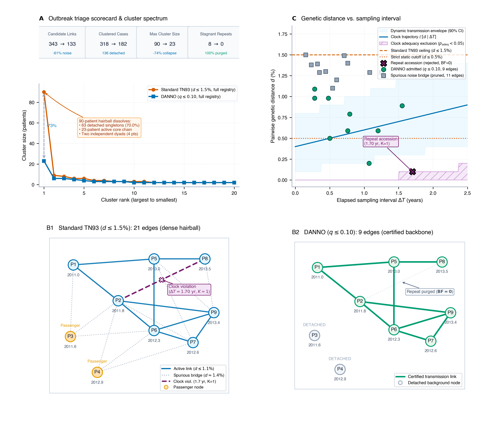
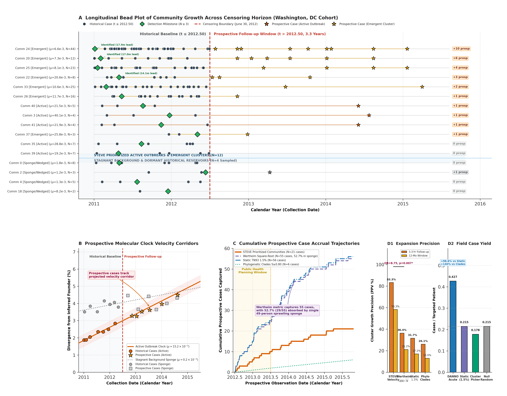
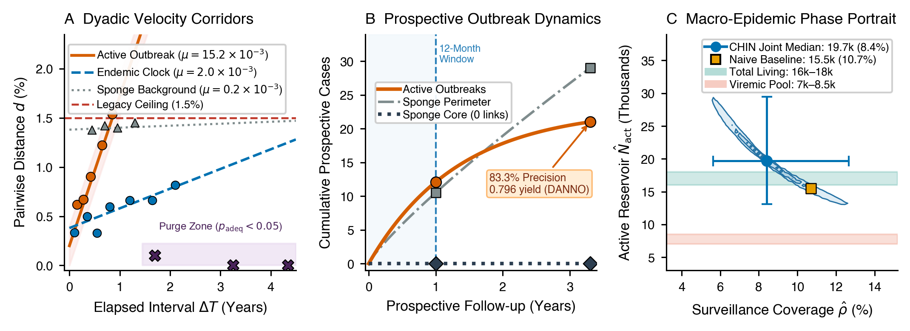

Standard HIV-1 molecular surveillance uses fixed genetic-distance cutoffs (0.5% or 1.5%) that ignore when sequences were collected—severing delayed transmission links while chaining unlinked chronic infections and lab repeats into sprawling clusters.
By pairing genetic divergence with elapsed sampling time, TRACE-5.0 nearly doubles follow-up cases per prioritized patient, cuts non-growing priority clusters by 93%, and bounds total undiagnosed epidemic size in seconds inside a local web browser.
Evaluating genetic distance alongside sampling dates nearly doubles follow-up cases per prioritized patient in Washington, DC ($0.400 \to 0.796$) while cutting patient reviews by 61.4%.
Ranking sub-clusters by how fast they accumulate mutations over time predicts future cluster growth with 75–83% precision across four cohorts and cuts non-growing priority clusters by 92.9%.
Using network collision rates to estimate sampling completeness ($\hat{\rho} = 8.4\%$ in DC) recovers total active transmitting populations ($\hat{N}_{\mathrm{act}} = 19{,}700$) that match independent public health estimates.
Runs alongside existing HIV-TRACE workflows on standard FASTA and date files completely offline in any browser, keeping sensitive clinical sequences inside the health department firewall.
For the past decade, routine HIV-1 molecular surveillance in state and national health departments has relied on a simple, durable workflow (Kosakovsky Pond et al., 2018): take the pol gene sequences collected during routine drug-resistance testing, compute all pairwise Tamura–Nei (TN93) genetic distances, and link any two patients whose sequences differ by less than a fixed cutoff—typically $1.5\%$ for surveillance, or $0.5\%$ for US federal priority clusters (Oster et al., 2018).
Health departments adopted pairwise distance networks for good reasons: they are fast, deterministic, reproducible across jurisdictions, and easy for field teams to interpret without building phylogenetic trees. Yet a static threshold has a fundamental blind spot: it applies the exact same genetic yardstick whether two patients were sampled on the same afternoon or four years apart.
In a new preprint with Steven Weaver, Darren Martin, Taylor Paisie, Daria Chalkova, Brittany Rife Magalis, Simon Frost, and Joel Wertheim (TRACE-5.0: Dynamic Transmission Surveillance, or How HIV-TRACE Learned to Stop Worrying and Love the Molecular Clock; open-source code), we show how incorporating specimen collection dates directly into pairwise network clustering fixes the core vulnerabilities of static cutoffs across 10,259 patients in four cohorts.
What happens when you apply a flat distance cutoff to an evolving virus? Because HIV-1 accumulates mutations continuously within and across hosts, two opposite failures occur at the same time (Fig. 1):
- Strict cutoffs ($0.5\%$) sever delayed diagnoses: When a linked partner is diagnosed one to three years after transmission, normal viral evolution routinely pushes their sequence divergence above $0.5\%$. At simultaneous sampling, $73.8\%$ of genuine transmission pairs fall below $0.5\%$; at two years of sampling separation, only $34.6\%$ do, and by four years just $11.2\%$ remain below the line. In the Washington, DC cohort ($N = 1{,}658$, Pérez-Losada et al., 2017), a strict $0.5\%$ threshold misses 38.8% (19/49) of clock-consistent acute transmission dyads—and captures only 8.9% of linked future diagnoses in temporal-holdout testing.
- Lenient cutoffs ($1.5\%$) merge unlinked chronic infections and lab repeats into sprawling clusters: Raising the threshold to $1.5\%$ recovers delayed diagnoses, but it also bridges unlinked chronic lineages into giant connected components—and treats two identical sequences sampled four years apart ($d = 0\%$, $\Delta T = 4.03\text{ yr}$) as an active outbreak rather than what they actually are: repeat blood draws from the same patient or HXB2 laboratory control carryover. Static $1.5\%$ clustering chains 90 patients into a single component in DC (Fig. 1A), merges 332 patients around HXB2 reference carryover in Middle Tennessee (Dennis et al., 2018), links 2,896 patients into one cluster in Japan (Shiino et al., 2020), and collapses 91.2% of a low-diversity recombinant epidemic in Shenzhen (Zhao et al., 2016).

Can we give health departments the biological realism of a molecular clock without asking them to abandon pairwise networks for 48-hour Bayesian phylogenetic runs?
National guidelines already recognize that genetic distance and time belong together—pairing a $0.5\%$ threshold with a 12-to-36-month diagnosis window.
TRACE-5.0 simply replaces that two-step heuristic with a continuous, self-calibrating clock across three scales:
- Pairwise Scale —
DANNO(Dynamic Ancestral Negative-binomial Network Odds): Instead of a flat horizontal line,DANNOevaluates each pair against a dynamic transmission corridor that widens smoothly with the time between sample dates ($\Delta T$) while calibrating itself to the cohort's standing background diversity. At the same time, a molecular-clock adequacy test automatically flags pairs with too few mutations for the years elapsed between them, catching duplicate patient accessions and HXB2 lab contamination before cluster review. - Cluster Scale —
STEVE(Spectral Temporal Evolutionary Velocity Engine): Rather than ranking clusters strictly by recent case counts,STEVEsplits sprawling networks into cohesive sub-clusters and measures their local evolutionary velocity—how fast substitutions accumulate per year along the sub-cluster. Because early HIV-1 infection replicates rapidly before purifying selection prunes transient variants, actively expanding outbreaks exhibit a steep, measurable clock slope ($\mu \approx 15 \times 10^{-3}\text{ sub/site/yr}$), separating Tier 1/2 active outbreaks (suited for expedited partner services and PrEP outreach) from Tier 3 chronic reservoirs (suited for care re-engagement and viral suppression support). - Population Scale —
CHIN(Cluster-to-Host Incidence and Network): Sampling one person scales linearly with surveillance coverage ($\rho$), but sampling both partners of a transmission link scales quadratically ($\rho^2$). Using this collision rate,CHINestimates what fraction of the transmitting population has been sequenced and bounds the total active epidemic pool ($N_{\mathrm{act}}$) directly from the network.
To test whether these three engines improve real-world prioritization, we ran temporal-holdout validations across Washington, DC, Middle Tennessee, Japan, and Shenzhen—freezing each registry at a historical cutoff date and measuring which clusters and patients actually accumulated linked diagnoses over the next 2 to 3.5 years (Fig. 2):
- Nearly doubling future cases per prioritized patient (
DANNO): In Washington, DC, prioritizing patients in acuteDANNOdyads ($q \le 0.05, \Delta T \le 2\text{ yr}$) reduced the initial review pool by 61.4% (54 patients vs. 140 under static $1.5\%$) while identifying 43 future linked diagnoses—nearly doubling resource-normalized yield from 0.400 to 0.796 future cases per prioritized patient (Fig. 2D2). In low-diversity Shenzhen CRF07_BC, where static $1.5\%$ collapsed 91.2% of the entire cohort into one cluster, self-calibratedDANNOachieved 2.464 future cases per prioritized patient at 100% case recall. - Cutting non-growing priority clusters by 92.9% (
STEVE): Static $1.5\%$ clustering flagged 41 DC clusters, 28 of which showed zero future growth (31.7% precision). Standard size-normalized growth ($\Delta N / \sqrt{N} \ge 0.70$) reached 36.4% precision (21.2% at 12 months), with over half of its future cases falling passively into a single 49-patient background component (Fig. 2C).STEVEprioritized 12 high-velocity clusters, 10 of which expanded prospectively (83.3% precision, 58.3% within 12 months, and only 2 non-growing clusters; $p = 0.0074$)—and achieved 75.0% to 83.3% precision across all four cohorts. - Eliminating lab contamination and bounding hidden reservoirs (
DANNO+CHIN): Across all four cohorts,DANNOautomatically purged every stagnant repeat and HXB2 contamination bridge—dissolving Middle Tennessee's 332-patient HXB2 cluster into 66 sub-clusters in 0.94 seconds and breaking Japan's 2,896-patient component into 178 sub-clusters in 9.81 seconds. Meanwhile,CHINrecovered total active transmitting populations that aligned closely with independent public health surveillance estimates across DC ($\hat{N}_{\mathrm{act}} = 19{,}700$ vs. 16,000–18,000 living cases; Fig. 3C), Middle Tennessee ($17{,}409$ vs. 13,000–16,500), Japan ($14{,}114$ vs. 16,000–22,000), and Shenzhen ($611$ vs. 600–900).


Because clinical viral genotypes are protected health records that cannot leave public health firewalls, we implemented TRACE-5.0 in Rust and compiled it to both command-line binaries (trace50-cli) and client-side WebAssembly (trace50-wasm).
Health departments can run TRACE-5.0 alongside existing HIV-TRACE workflows on the exact same FASTA and diagnosis-date files—continuing mandatory $0.5\%$ and $1.5\%$ reporting while screening 5,000+ sequences in seconds completely offline inside a local web browser.